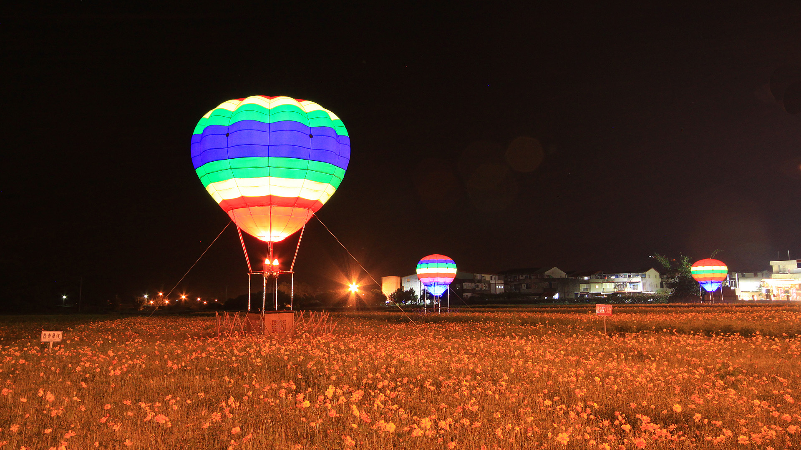
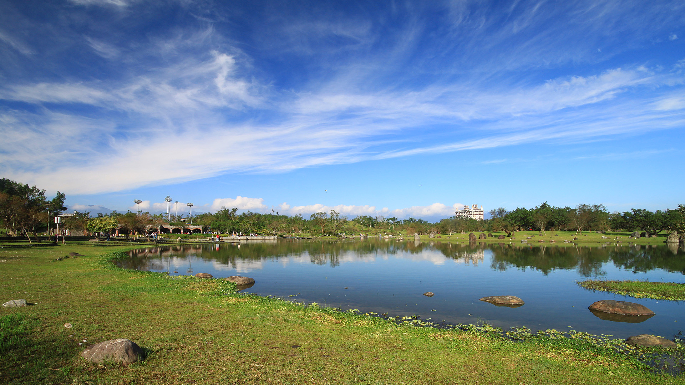
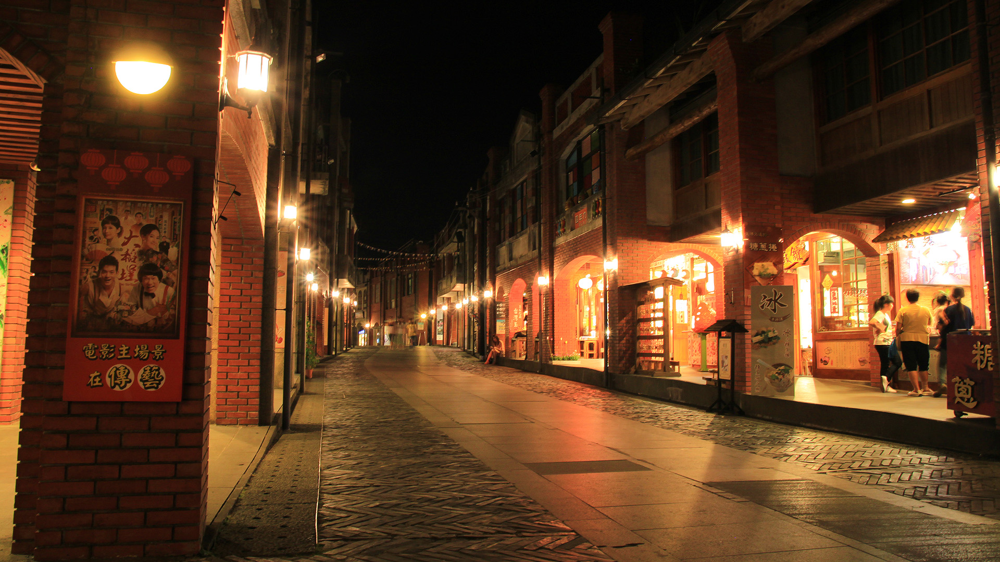
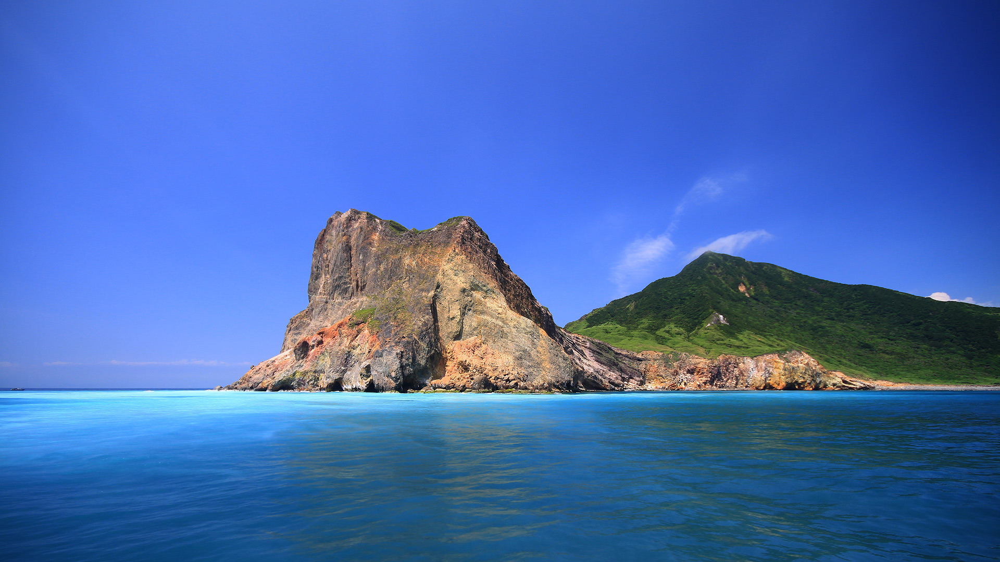
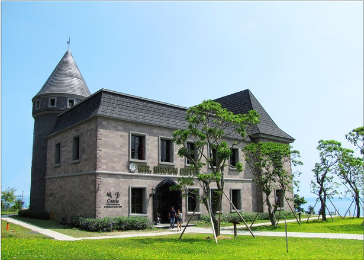
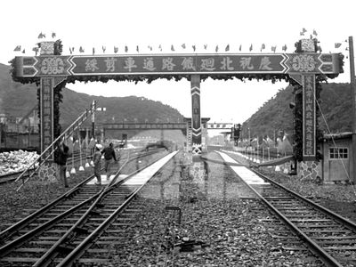
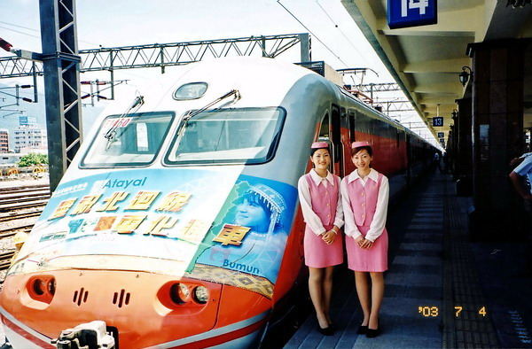
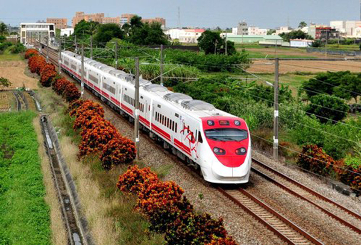

關於宜蘭
INTRODUCE
宜蘭x我們的家鄉
純樸的宜蘭，沒有大城市的繁華，沒有過多的物質享受但卻多了一份悠閒，多了一股人情味，更有許多美麗的風景。
早期宜蘭遊子返鄉，都得經過重重的山路一路翻山越嶺，好不容易從北宜公路駛出，海平面上隱隱浮現的龜山島眺入眼間，彷彿在說：宜蘭到了!
隨著雪隧的開通，台北和宜蘭往來只需不到一個小時的車程，雖然為宜蘭帶來便利的交通，觀光財也隨著人、車潮湧入，但也造成了許多問題，只要一到假日路上往往擠得水洩不通，房地產被投資客炒高，我們最引以為傲的蘭陽平原，也因為一間接著一間蓋起的農舍而影響了整體的美觀。
太過快速而全面的開放，隨著雪山隧道的開通而讓宜蘭人接應不暇，一方面我們希望宜蘭能維持好山好水，一方面又希望科技進步，如何適應快速變遷下帶來的改變，如何在發展和環境中維持平衡都是一大挑戰
私房宜蘭
SECRET
三星花海

羅東運動公園

國立傳統藝術中心

龜山島

金車伯朗城堡咖啡館

宜蘭小故事
HISTORY

北迴鐵路

自1980年2月正式通車營運以來，堪稱是當時台鐵最賺錢的黃金路線，使得東西部的往來更形便利，加以帶動宜蘭的觀光事業、天然資源之開發。

位因應自通車營運以來，客運量的急速增加，自1992年起，北迴線開始進行雙軌化、重軌化、電氣化與號誌控制改良工程，大部分工程於2003年6月底完工。

自2013年起，隨著普悠瑪列車陸續投入，客運列車班次大增，更大幅改善北迴線假日一票難求的問題。


聯絡我們
CONTACT


※頁面上些許照片取自google，如有版權問題歡迎隨時聯絡，必定盡力配合，感謝。
© Copyright c-week.elebymax.net 2016